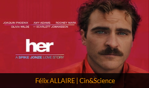
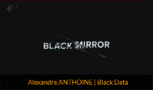
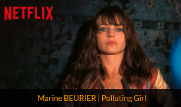
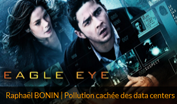
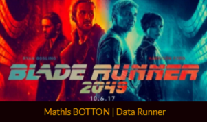

Accueil
La dénonciation
La pollution numérique
Limiter cette pollution
Autres projets
A propos / Contact
Autres projets
Si vous avez aimé ce site, vous pourriez aimer les projets des autres étudiants !




